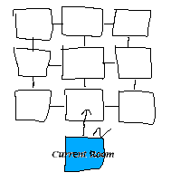
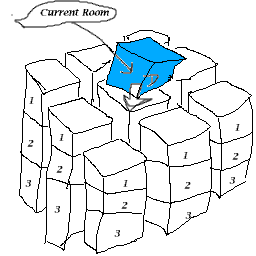

Divunal Verbs:
[discover] [listen/unlisten] [shadowstep] [twin/untwin] [visit]
Divunal Verb Definitions:
discover [int x] [int y] [int z] to [direction direction]Creates a (possibly three dimensional) grid of rooms, connected to your current room via the direction exit, of the dimensions x by y by z, where each room is connected to every "adjacent" room but not creating the directional exits specified via Except.listenArguements x and y must be integers between 1 and 9 (describing the width and length, respectively), and z must be a non-zero integer between -9 and 9, which will determine the height (positive = up, negative = down). Adjacent rooms in the grid are connected via all appropriate exits, but directions specified by except will not be built; If you specify e or w, no east/west exits will be created. The same goes for north-south exits (n or s) and up/down exits (u or d).Because of the way Discover parses its arguements, it is important to not include any extra spaces or characters, and while the except directions can be a letter (or any word beginning with the appropriate letter) n, s, e, w, u, or d, you must remember to put an "and" between them.
The grid will be connected by the "middle" of the side where it is attached; A North, South, East, or West exit will connect to the middle of the appropriate side of the grid, while an Up or Down exit will connect to the "middle" of the bottom or top of the grid, respectively (Middle is placed in quotes to reflect the fact that there is no exact middle square in a grid with an even dimension along one side). Also, keep the vertical direction in mind... If your Z axis is more than 1, positive will be going upwards, and negative will be going downwards. For example:

"discover 3 3 1 to north except u", will create a 3 x 3 set of rooms, connected to your current room through the north exit.

"discover 3 3 -5 to down except e and n" will build a 3 x 3 grid of rooms, three rooms high (downwards), with no east/west or north/south exits, the top of which is connected to your current room by the Down exit. (essentially, 9 unconnected vertical columns, the middlemost one of which is accessible through the down exit of the current room.)
Known Bugs:
I haven't actually tested this... But the docs do currently reflect how it is "supposed" to work. ;-)
shadowstepCauses any speech your character can hear to pop up in a Response Processor window; This effect ends soon as you use the "unlisten" command, or start talking yourself.
This is handy if you aren't going to pay attention to your character for a while, or have the Faucet window minimized... It causes speech to pop up in a vaguely AOLIM-like way. The "unlisten" command is mostly for convenience (if you don't want to actually have to say anything to turn it off).
Known Bugs:
If you click the "Okay" button on a Listen response window, it will spit out a Null Pointer Exception error. This has no detrimental effects other than mild annoyance, and it's actually due to a bug in Response Processor anyway.
A convenience verb for passing between concentric areas, named in deference to some stuff Roger Zelazy wrote. With no arguements, it will move outwards if the next outermost location is not null; With arguements, it will attempt to move the player into a specified location in the same place as themselves. If you step into an uncomfortably small container, any resulting embarassment is your own damned fault.twin [local-thing : thing]
twin reversibly alters the god's name and description to match that of thing, and untwin does the reversing.visit [global-thing : thing]This verb is now safe to use, but it will "back up" your old name, apparent name, and description on your character, and it is important that these aren't removed before you decide to turn back. Currently, it's very easily to tell the two apart (If Twin twins Tenth, and Maxwell attempts to refer to Tenth, he will always get the real one) but this will probably be remedied at a later time. (At some point, it would choose between the "Twin" Tenth and the real Tenth randomly when someone requested Tenth.) Note that this does not affect your clothes or your inventory in any way.
twin and untwin are also smart enough to refuse to operate if you are already Twinned (or not Twinned, respectively) but once again, mess with the string properties it applies at your own risk.
Teleports the God to the room where thing is currently located, after a short delay.
There is a visible effect before and after the teleportation takes place, giving some ammount of warning before the god will actually appear, and the visit destination will not change if thing happens to leave before then.
The color of the distortions that appear as the god "locks on" to the location currently default to blue, but you can choose your own by placing a "visit color" string property on your character, which should fit into the phrase "Streaks of [visit color] light appear in the air...". Tenth's are greenish, Maxwell's are ghostly, etc...